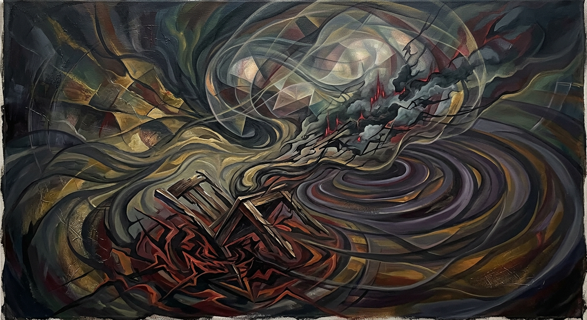

Consciousness: pain and matter
What does it mean to feel? This visual explores pain as something projected onto matter, connecting the inner experience of consciousness to the physical world—a question worthy of any host or human.

What we’re making
Step into our park of ideas: builds inspired by Westworld, consciousness, and the mysteries beyond the frontier.
What does it mean to feel? This visual explores pain as something projected onto matter, connecting the inner experience of consciousness to the physical world—a question worthy of any host or human.

Krish’s question about rigidity became the spark for our project. Thinking about what stays fixed and what can change led us toward consciousness, identity, and the open-ended setting of space.